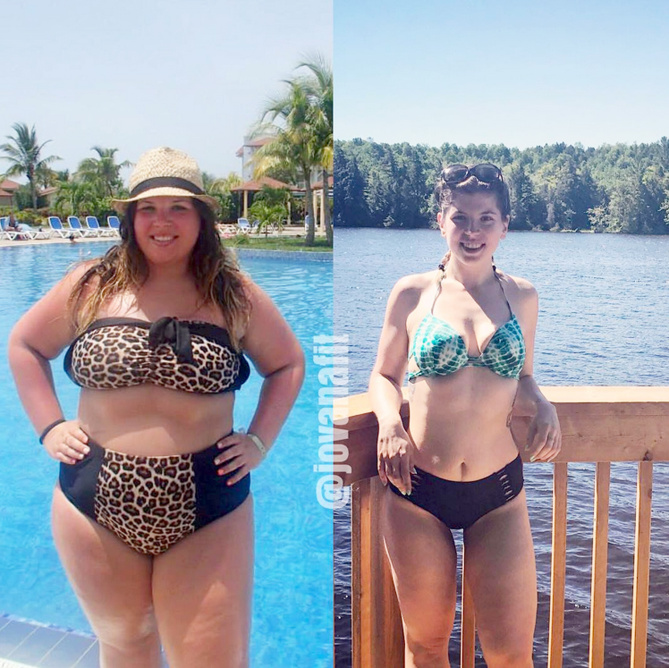
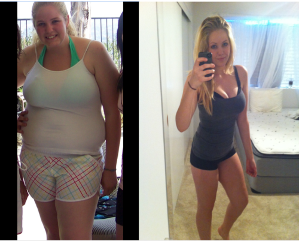

Turning point: My 'freshman 15' was more like the 'freshman 40.' I was a huge emotional eater. I would eat when I was stressed, happy, sad—it didn’t matter. I felt embarrassed trying on clothes when I'd have to secretly ask the sales lady to bring me a larger size. I felt drained from the life that I was leading, and I knew that if I didn’t make a change soon, my weight would continue to balloon and my health would suffer. I am proud to say that I changed my lifestyle by forming great habits and I've never turned back.
Weight-loss tip: There is no magic pill or potion for getting fit. I learned this through my own trials and errors until I was finally able to kick bad habits and embrace health and fitness as a lifestyle.
Same girl, same day, same time, wrote body positive advocate Milly Smith earlier this week in a caption for two photos that illustrate a simple point: Where your tights sit on your waist can make a big difference in how your body appears on camera. We are so blinded to what a real unposed body looks like and blinded to what beauty is that people would find me less attractive within a 5 second pose switch! How insanely ridiculous is that!? ( Ricarda Montenegro) Jovana Borojevic: Lost 139 Lbs.
Although she was happy and confident in her body, Jovana Borojevic was shocked when she finally stepped on a scale.
I never in my life imagined that I would see a 3 in front of my weight, Borojevic, who hit 304 lbs. and had developed fatty liver disease from her fast food-heavy diet, all while dealing with Polycystic ovary syndrome, or PCOS, tells PEOPLE. From this day forward, something clicked in me and I changed my life around cold turkey.
The digital marketing strategist, now 24, immediately cut out starchy carbs, refined foods, sugar and most packaged food. In a month she dropped almost 20 lbs., and started hitting the gym four to five times a week for weight training and cardio workouts.
It is SO IMPORTANT to focus on non-scale victories like how your clothes fit, how you feel, how many health issues you’ve reversed and saved yourself from and how happy you are! Now a year and a half into her weight loss journey, Borojevic is down to 165 lbs., with a goal weight of about 150 lbs.
Angelique Boyer
Hollywood has an inclusivity problem, and it may not be the one you think. While shows like House, Scrubs, and Grey’s Anatomy all take place in a medical setting, the illnesses we see characters suffer from on these programs and in other popular TV shows and movies are most commonly what I like to call the big three: cancer, heart attack, and stroke (with the occasional gunshot victim thrown in). Yet a major and debilitating illness that the Centers for Disease Control and Prevention estimates afflicts 30.3 million people is rarely, if ever, represented in this medium: type 2 diabetes. Think about it: Have you ever seen a character prick their finger to inject insulin or count carbs on camera? The same goes for people behind the camera. It’s rare to hear about a producer, a cameraman or -woman, or a director speaking out about his or her type 2 diabetes. But type 1 diabetes, meanwhile, is often discussed by celebrities: Mary Tyler Moore, Nick Jonas, and Jay Cutler, for example, are all vocal about their diagnoses. The famous individuals with type 2 seem to be nonexistent, except for Tom Hanks, of course. In a world where art often imitates life, shouldn’t there be more people with type 2 diabetes represented in American pop culture? And what’s the reason they aren’t?
{kind=link}